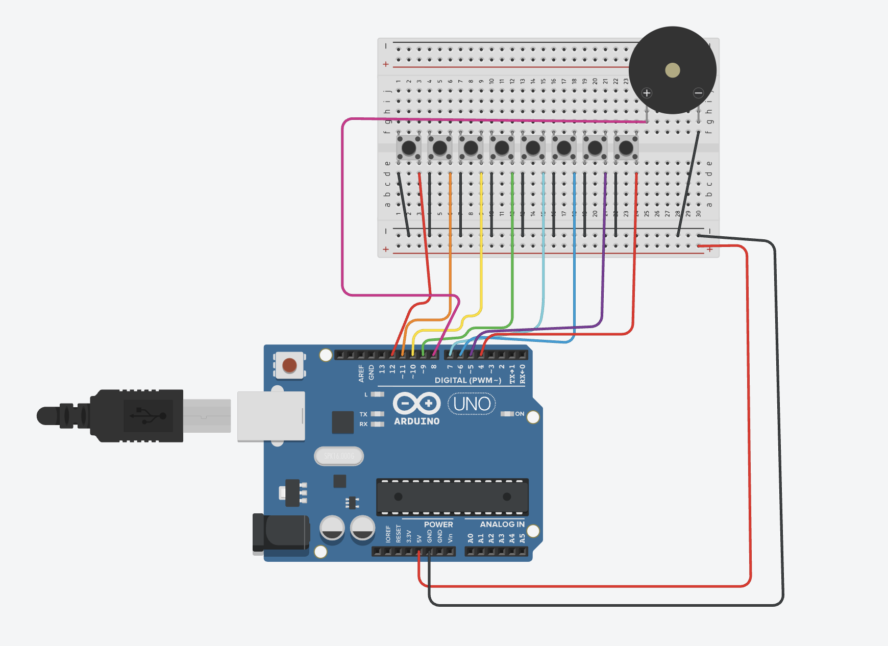

Guía de trabajo
Práctica: Práctica 2 - Teclado Musical Básico con Arduino
Grado: 5° y 6° de Primaria
Área: Tecnología / Pensamiento Computacional
Proyecto: Teclado musical con botones y buzzer
Profesor: Luis Alfonso Martínez Alfaro
Practicario
Primero completa tus respuestas en esta hoja. Cuando termines, usa el botón para abrir la versión de impresión y guardar un PDF con tus propias respuestas.
1. Introducción
En esta actividad aprenderás a construir un teclado musical sencillo usando Arduino. Al presionar botones, el circuito producirá diferentes sonidos, como un pequeño piano.
El proyecto se realizará en dos partes:
- Primero de forma digital, usando Tinkercad.
- Después de forma física, armando el circuito real.
Esto te ayudará a entender mejor cómo funciona la tecnología antes de construirla.
2. ¿Qué es Arduino?
Arduino es una tarjeta electrónica que funciona como un cerebro. Sirve para decirle a otros componentes qué hacer.
Con Arduino podemos:
- Leer botones.
- Hacer sonidos.
- Encender luces.
En esta práctica usaremos Arduino Uno, ideal para aprender.
3. Materiales
- 1 Arduino Uno.
- 8 botones (pushbutton).
- 1 buzzer pasivo.
- 1 protoboard.
- Cables de conexión.
4. Componentes y su función
Arduino Uno
Es el cerebro del proyecto. Detecta los botones y ordena al buzzer que suene.
Botones
Sirven para dar instrucciones. Cada botón representa un sonido.
Buzzer
Es el componente que produce el sonido.
Protoboard y cables
Permiten conectar todo de forma segura, sin soldar.
5. Diagrama del circuito
El profesor te compartirá el diagrama del circuito.
Es muy importante observarlo con atención, ya que el mismo diagrama se usará tanto en la parte digital como en la parte física.

Instrucción para ingresar a Tinkercad
- Abre tu navegador de internet (Chrome, Edge o Firefox).
- Ingresa a la siguiente dirección:
https://www.tinkercad.com. - Haz clic en Iniciar sesión (Sign in).
- Selecciona una de estas opciones para entrar: Cuenta de Google, Cuenta de Microsoft o Cuenta de Autodesk.
- Una vez dentro de la plataforma, entra a la sección Circuits (Circuitos).
- Presiona el botón Create new Circuit (Crear nuevo circuito).
- Dentro del simulador podrás agregar un Arduino Uno, insertar LEDs, colocar resistencias, conectar buzzer y escribir el código del programa.
- Finalmente presiona Start Simulation para ejecutar el circuito y verificar que funcione correctamente.
Indicaciones importantes:
- Guarda tu proyecto con el nombre:
HimnoAlegria_Arduino_TuNombre. - Verifica que los LEDs enciendan según la interacción de los botones.
- Comprueba que el buzzer reproduzca los sonidos esperados y que no haya errores de conexión.
6. Desarrollo de la actividad
Parte 1. Trabajo digital (Tinkercad)
- Observa el diagrama del circuito.
- Arma el circuito en Tinkercad.
- Revisa que los botones y el buzzer funcionen correctamente.
- Comprende cómo se conectan los componentes.
Importante: No se pasa a la parte física hasta entender esta parte.
Parte 2. Trabajo físico (circuito real)
- Arma el circuito real usando Arduino, botones y buzzer.
- Sigue el mismo diagrama usado en Tinkercad.
- Revisa con cuidado los cables.
- Prueba el teclado musical presionando los botones.
7. ¿Para qué sirve este proyecto?
Este tipo de proyectos se usa para:
- Juguetes electrónicos.
- Teclados musicales.
- Juegos interactivos.
- Aprender tecnología de forma creativa.
8. Evidencias del proyecto
Todo deberá integrarse directamente en el practicario, incluyendo:
- Foto del circuito físico armado.
- Video corto del teclado musical funcionando.
- Practicario completo y contestado.
La fotografía será tomada por el profesor cuando los alumnos terminen su circuito físico y lo soliciten al profesor.
El video será grabado por el profesor cuando los alumnos finalicen y lo soliciten al profesor.
El alumno deberá pedir apoyo al profesor para tomar la evidencia.
9. Cierre
Este proyecto te ayudará a entender que la tecnología primero se piensa, luego se prueba y finalmente se construye.
Código del teclado musical
/**
Mini piano for Arduino.
*/
// Definiciones de notas
#define NOTE_C4 262
#define NOTE_D4 294
#define NOTE_E4 330
#define NOTE_F4 349
#define NOTE_G4 392
#define NOTE_A4 440
#define NOTE_B4 494
#define NOTE_C5 523
#define SPEAKER_PIN 8
const uint8_t buttonPins[] = { 12, 11, 10, 9, 7, 6, 5, 4 };
const int buttonTones[] = {
NOTE_C4, NOTE_D4, NOTE_E4, NOTE_F4,
NOTE_G4, NOTE_A4, NOTE_B4, NOTE_C5
};
const int numTones = sizeof(buttonPins) / sizeof(buttonPins[0]);
void setup() {
for (uint8_t i = 0; i < 8; i++) {
pinMode(buttonPins[i], INPUT_PULLUP);
}
pinMode(SPEAKER_PIN, OUTPUT);
}
void loop() {
int pitch = 0;
for (uint8_t i = 0; i < 8; i++) {
if (digitalRead(buttonPins[i]) == LOW) {
pitch = buttonTones[i];
}
}
if (pitch) {
tone(SPEAKER_PIN, pitch);
} else {
noTone(SPEAKER_PIN);
}
}Respuestas del practicario
Firma de revisión
Profesor: ____________________________________